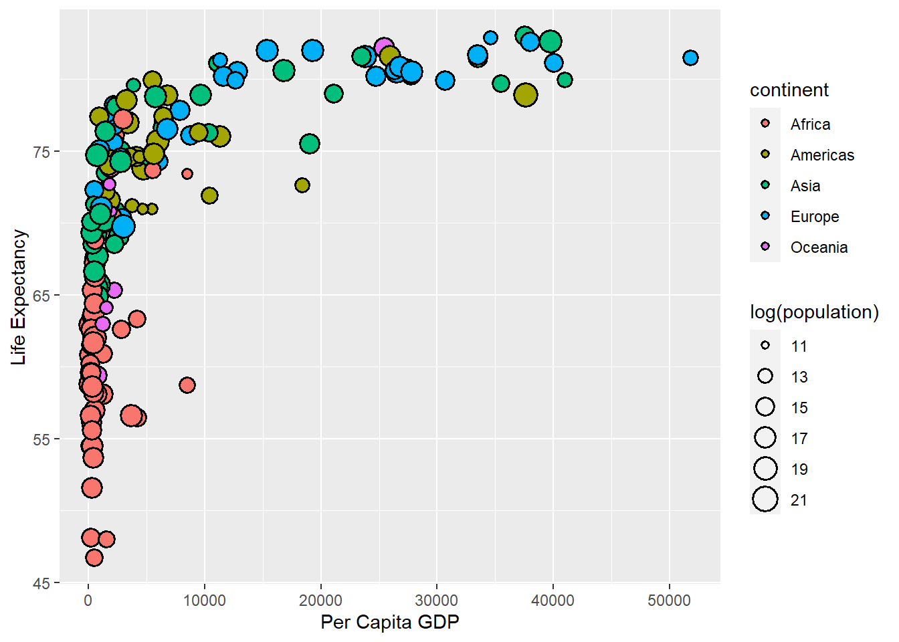
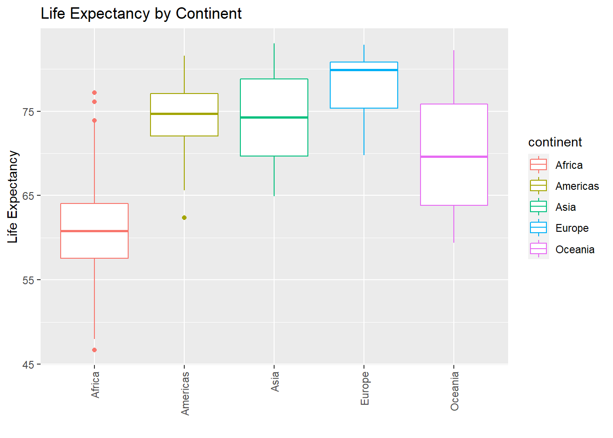
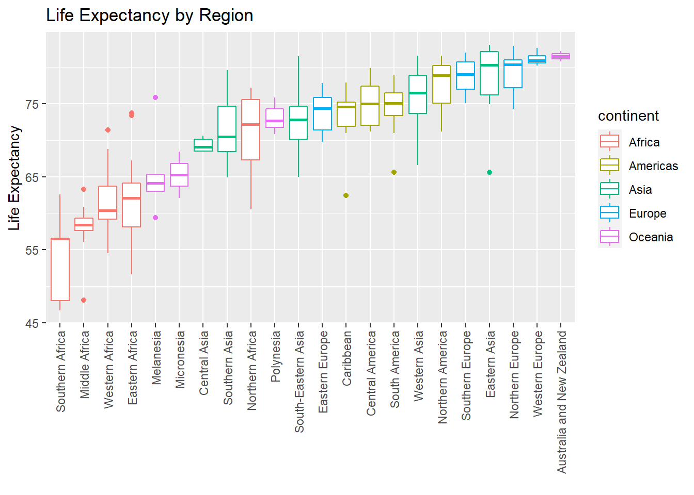
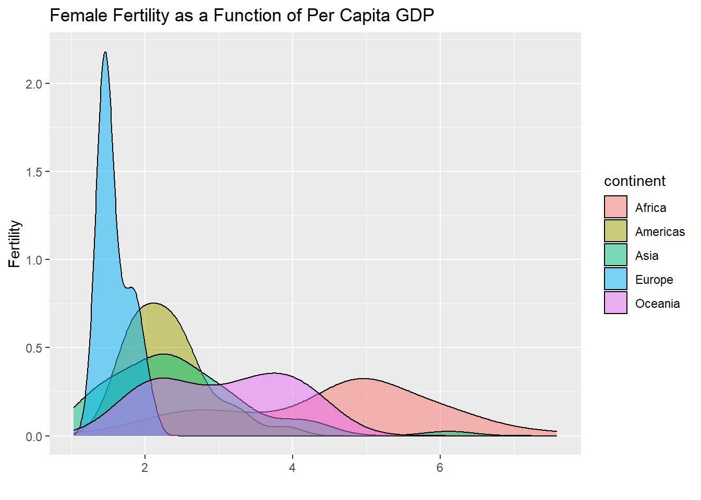
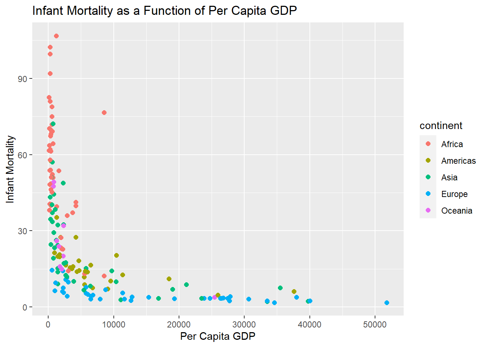
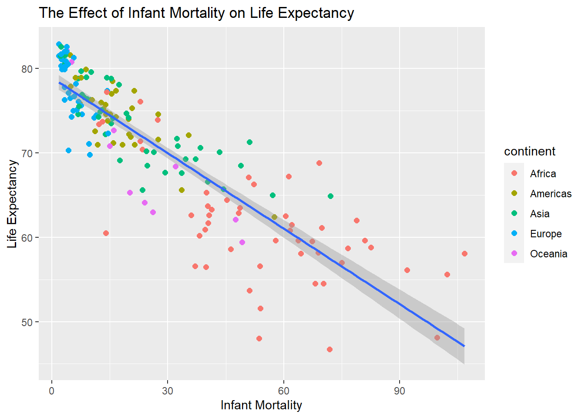

Today, we’ll use ggplot to visually explore global trends in public health and economics compiled by the Gapminder project. This project was pioneered by Hans Rosling, who is famous for describing the prosperity of nations over time through famines, wars and other historic events with this beautiful data visualization in his 2006 TED Talk: The best stats you’ve ever seen.
library(dslabs)## Warning: package 'dslabs' was built under R version 4.0.3library(tidyverse)## Warning: package 'tidyverse' was built under R version 4.0.3## Warning: package 'ggplot2' was built under R version 4.0.3head(gapminder)## country year infant_mortality life_expectancy fertility
## 1 Albania 1960 115.40 62.87 6.19
## 2 Algeria 1960 148.20 47.50 7.65
## 3 Angola 1960 208.00 35.98 7.32
## 4 Antigua and Barbuda 1960 NA 62.97 4.43
## 5 Argentina 1960 59.87 65.39 3.11
## 6 Armenia 1960 NA 66.86 4.55
## population gdp continent region
## 1 1636054 NA Europe Southern Europe
## 2 11124892 13828152297 Africa Northern Africa
## 3 5270844 NA Africa Middle Africa
## 4 54681 NA Americas Caribbean
## 5 20619075 108322326649 Americas South America
## 6 1867396 NA Asia Western Asiagap2011 <- gapminder %>%
as_tibble() %>%
filter(year == 2011)
head(gap2011)## # A tibble: 6 x 9
## country year infant_mortality life_expectancy fertility population gdp
## <fct> <int> <dbl> <dbl> <dbl> <dbl> <dbl>
## 1 Albania 2011 14.3 77.4 1.75 2886010 6.32e 9
## 2 Algeria 2011 22.8 76.1 2.83 36717132 8.11e10
## 3 Angola 2011 107. 58.1 6.1 21942296 2.70e10
## 4 Antigu~ 2011 7.2 75.9 2.12 88152 8.02e 8
## 5 Argent~ 2011 12.7 76 2.2 41655616 4.73e11
## 6 Armenia 2011 15.3 73.5 1.5 2967984 4.29e 9
## # ... with 2 more variables: continent <fct>, region <fct>ggplot(data = gap2011, aes(x = gdp/population, y = life_expectancy)) +
geom_point( aes(, size = log(population), fill = continent), shape = 21, stroke = 1, color = "black") +
xlab("Per Capita GDP") +
ylab("Life Expectancy") ## Warning: Removed 17 rows containing missing values (geom_point).
ggplot(data = gap2011, aes(x = continent, y = life_expectancy)) +
geom_boxplot(aes(color=continent)) +
theme(axis.text.x = element_text(angle = 90, vjust = 0.5, hjust=1)) +
ylab("Life Expectancy") +
xlab("") +
ggtitle("Life Expectancy by Continent")
ggplot(data = gap2011, aes(x = reorder(region, life_expectancy, FUN = median), y = life_expectancy)) +
geom_boxplot(aes(color=continent)) +
theme(axis.text.x = element_text(angle = 90, vjust = 0.5, hjust=1)) +
ylab("Life Expectancy") +
xlab("") +
ggtitle("Life Expectancy by Region")
ggplot(data = gap2011, aes(x = fertility)) +
geom_density(aes(group = continent, fill = continent), alpha = 0.5) +
ggtitle("Female Fertility as a Function of Per Capita GDP") +
ylab("Fertility") +
xlab("")
ggplot(data = gap2011, aes(x = gdp/population, y = infant_mortality)) +
geom_point(aes(color=continent), size = 2) +
ggtitle("Infant Mortality as a Function of Per Capita GDP") +
ylab("Infant Mortality") +
xlab("Per Capita GDP")## Warning: Removed 19 rows containing missing values (geom_point).
ggplot(data = gap2011, aes(x = infant_mortality, y = life_expectancy)) +
geom_point(aes(color = continent), size = 2) +
geom_smooth(method='lm') +
ggtitle("The Effect of Infant Mortality on Life Expectancy") +
ylab("Life Expectancy") +
xlab("Infant Mortality")## `geom_smooth()` using formula 'y ~ x'## Warning: Removed 7 rows containing non-finite values (stat_smooth).## Warning: Removed 7 rows containing missing values (geom_point).